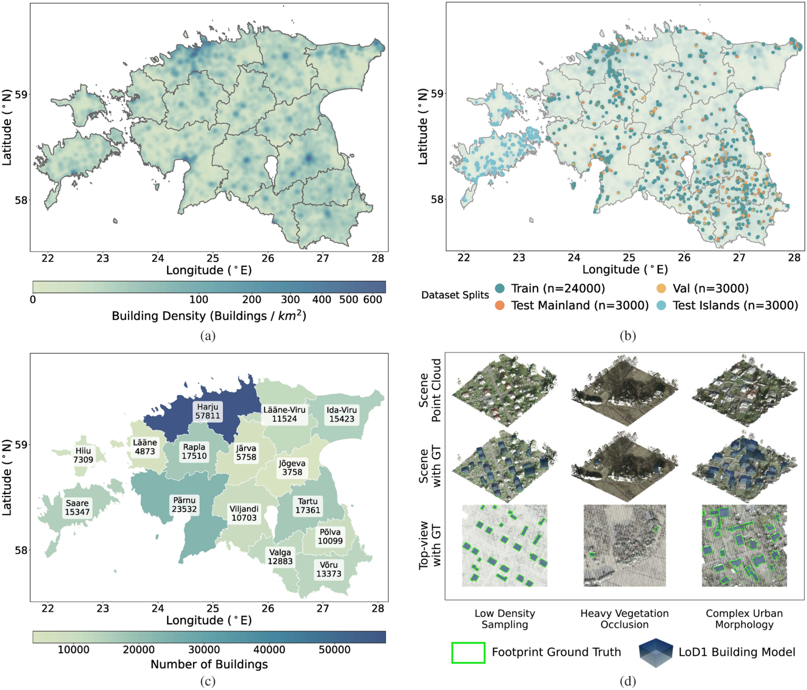
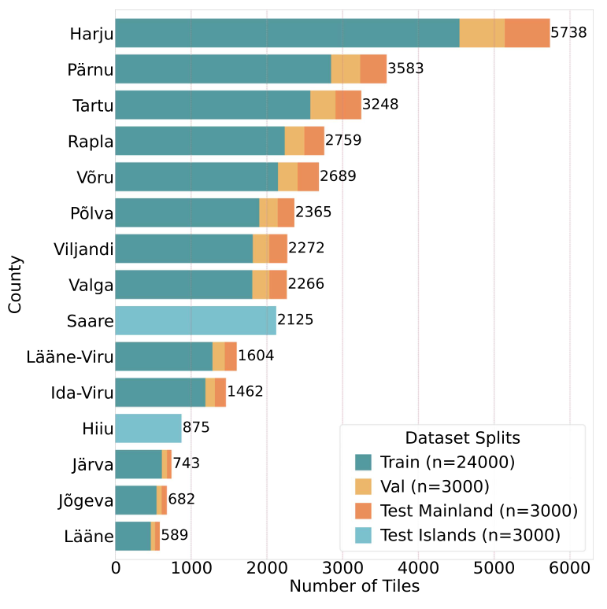
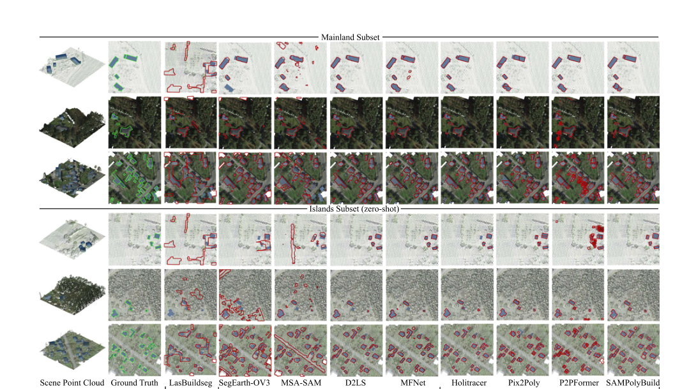

Geographic coverage and representative scenes across Estonia. Click the figure to explore it at full resolution.
01 / The research
Abstract
Building footprint extraction is a fundamental task in photogrammetry, remote sensing, and computer vision. Recent image-based methods have achieved remarkable progress in extracting vectorized footprints from high-resolution optical imagery. However, optical imagery is inherently susceptible to occlusions, perspective distortions, and residual relief displacement, yielding incomplete or misaligned extractions. Furthermore, the lack of explicit elevation information limits its direct applicability to level of detail building modeling.
To overcome these fundamental limitations, we present PCFootprint, the first large-scale public dataset dedicated to building footprint extraction from real aerial laser scanning point clouds. Significantly surpassing existing LiDAR-based datasets in scale, PCFootprint comprises 33,000 tiles featuring systematically aligned vectorized annotations across diverse urban and rural landscapes. Furthermore, in order to push the robustness of future algorithms, we construct a unique 3,000-tile cross-domain benchmark to evaluate model generalization across unseen geographic regions.
Comprehensive evaluations of mainstream methods reveal critical unresolved challenges in the 3-D domain, including high intraclass variance, severe data imbalance, and noise in complex geospatial environments. As a comprehensive public benchmark, we believe PCFootprint will facilitate future research in 3-D building modeling, urban scene understanding, and geospatial analysis.
02 / The dataset
Real geometry. Diverse landscapes.
Airborne laser scanning point clouds paired with aligned vectorized building footprints, spanning urban and rural environments in Estonia.
A benchmark built for generalization
The Mainland subset provides 24,000 training, 3,000 validation, and 3,000 test tiles. A geographically distinct Islands subset contains 3,000 test tiles from Saaremaa and Hiiumaa for zero-shot cross-domain evaluation.
- Tile extent
- 128 × 128 m
- Data
- ALS point clouds
- Annotations
- Vectorized polygons · MS-COCO format
- Point spacing
- 0.22–1.09 m
- License
- CC BY 4.0

Download & organization
The release contains Mainland and Islands point clouds alongside footprint annotation files. The dataset is distributed as a multipart ZIP archive on Hugging Face; download all parts before extraction. See the dataset card for file details.
PCFootprint/
├── Mainland/
│ ├── pointcloud/
│ └── <train|test|val>.json
└── Islands/
├── pointcloud/
└── test.json03 / The benchmark
Beyond the training region.
A unified comparison of pixelwise segmentation and polygonal regression methods, evaluated on both Mainland and unseen Islands scenes.
| Method | Paradigm | Mainland | Islands (zero-shot) |
|---|---|---|---|
| MFNet | Pixelwise segmentation | 49.8 | 33.2 |
| P2PFormer | Polygonal regression | 46.3 | 40.8 |
| SAMPolyBuild | Polygonal regression | 47.6 | 44.7 |
Polygonal regression retains sharper boundaries and shows stronger cross-region robustness, while sparse sampling, vegetation occlusion, and complex urban morphology remain challenging.

04 / Cite this work
Citation
If you use PCFootprint in your research, please cite our paper.
@article{shen2026pcfootprint,
title = {PCFootprint: A Large-Scale Dataset and Benchmark for
Vectorized Building Footprint Extraction From
Aerial LiDAR Point Clouds},
author = {Shen, Haoyuan and Wang, Kuihao and Wang, Ruisheng
and Liu, Yujun},
journal = {IEEE Journal of Selected Topics in Applied Earth
Observations and Remote Sensing},
volume = {19},
pages = {26525--26539},
year = {2026},
doi = {10.1109/JSTARS.2026.3715686}
}
Acknowledgements
We thank the Estonian Land and Spatial Development Board for the open LiDAR and geospatial data used to develop PCFootprint. The paper and dataset are released under CC BY 4.0. Figures on this page are reproduced from the paper.